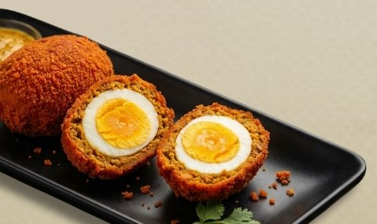

Dash of Kolkata in every bite!
Kathi rolls, chowmin, Mughlai paratha and a cup of cha — cooked the way the city likes it, in Sector V.
AQ Block, Sector V, Udayan Pally, Mahishbathan, Kolkata 700102
About us
KolBites is a Calcutta kitchen for the office crowd, the night-shift crowd and everyone in between.
Our menu is the food this city queues up for on its pavements: egg and chicken rolls wrapped hot off the tawa, Chinese-Bengali chowmin tossed the Tangra way, Mughlai paratha, chicken kasha, and singara with a cup of cha at the end of it.
Our logo carries the things that make Kolkata feel like home — the Howrah Bridge, the yellow Ambassador taxi — and we try to cook with the same sense of place. Honest portions, fair prices, and the flavour you remember.
See the menu
Visit or call
AQ Block, Sector V, Udayan Pally,Mahishbathan, Kolkata 700102
Call for today's hours and delivery area.